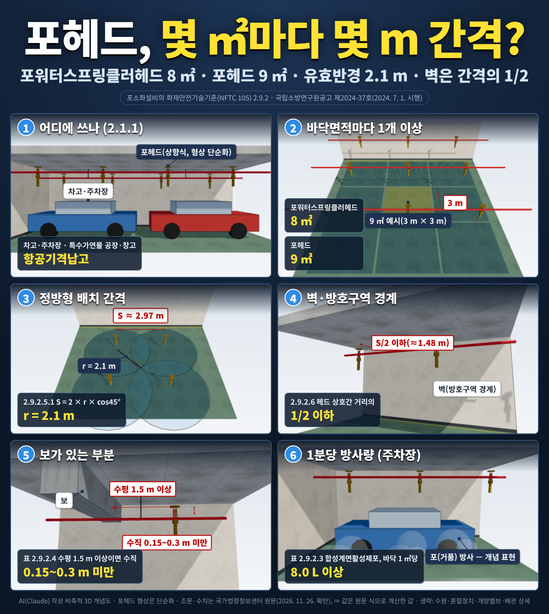
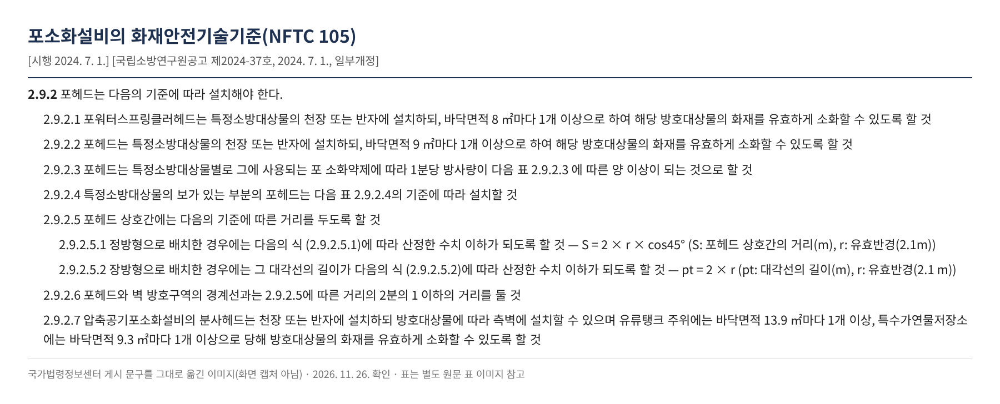
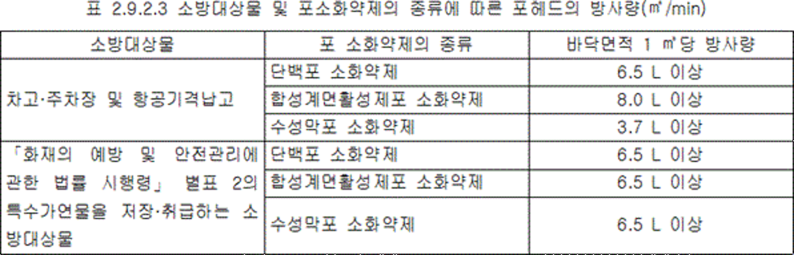
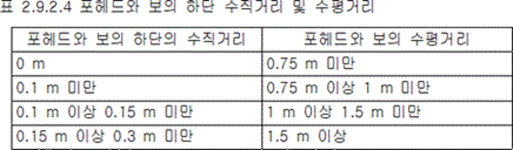
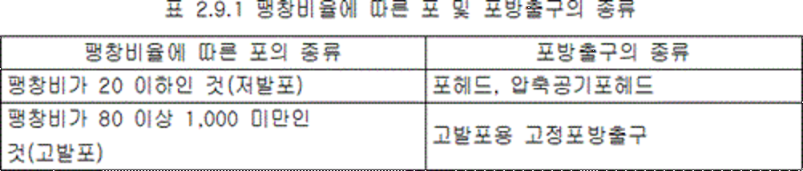
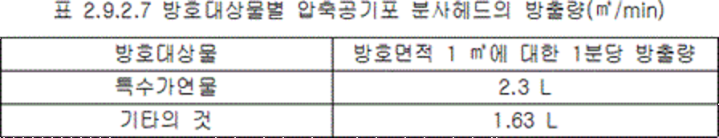
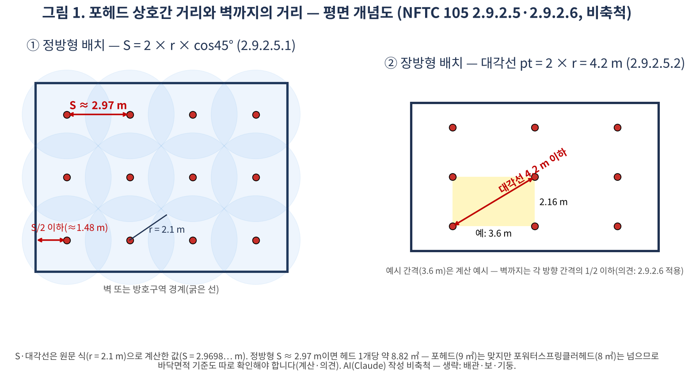
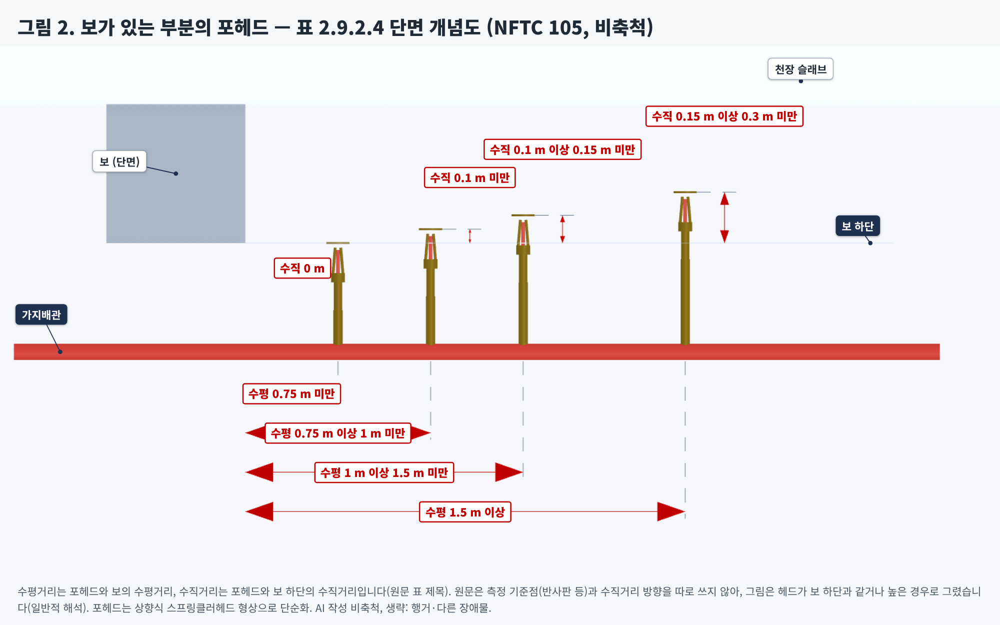

포헤드는 몇 ㎡마다, 몇 m 간격으로? — NFTC 105 2.9.2 포헤드 배치 기준
왜? 바닥 전체를 포로 빈틈없이 덮어 방호대상물의 화재를 유효하게 소화하려는 기준입니다(일반적 해석).

1. 공식 기준 원문 (NFTC 105, 현행)
2.9.2 포헤드는 다음의 기준에 따라 설치해야 한다.
2.9.2.1 포워터스프링클러헤드는 특정소방대상물의 천장 또는 반자에 설치하되, 바닥면적 8 ㎡마다 1개 이상으로 하여 해당 방호대상물의 화재를 유효하게 소화할 수 있도록 할 것
2.9.2.2 포헤드는 특정소방대상물의 천장 또는 반자에 설치하되, 바닥면적 9 ㎡마다 1개 이상으로 하여 해당 방호대상물의 화재를 유효하게 소화할 수 있도록 할 것
2.9.2.3 포헤드는 특정소방대상물별로 그에 사용되는 포 소화약제에 따라 1분당 방사량이 다음 표 2.9.2.3 에 따른 양 이상이 되는 것으로 할 것
2.9.2.4 특정소방대상물의 보가 있는 부분의 포헤드는 다음 표 2.9.2.4의 기준에 따라 설치할 것
2.9.2.5 포헤드 상호간에는 다음의 기준에 따른 거리를 두도록 할 것
2.9.2.5.1 정방형으로 배치한 경우에는 다음의 식 (2.9.2.5.1)에 따라 산정한 수치 이하가 되도록 할 것 — S = 2 × r × cos45° (S: 포헤드 상호간의 거리(m), r: 유효반경(2.1m))
2.9.2.5.2 장방형으로 배치한 경우에는 그 대각선의 길이가 다음의 식 (2.9.2.5.2)에 따라 산정한 수치 이하가 되도록 할 것 — pt = 2 × r (pt: 대각선의 길이(m), r: 유효반경(2.1 m))
2.9.2.6 포헤드와 벽 방호구역의 경계선과는 2.9.2.5에 따른 거리의 2분의 1 이하의 거리를 둘 것
2.9.2.7 압축공기포소화설비의 분사헤드는 천장 또는 반자에 설치하되 방호대상물에 따라 측벽에 설치할 수 있으며 유류탱크 주위에는 바닥면적 13.9 ㎡마다 1개 이상, 특수가연물저장소에는 바닥면적 9.3 ㎡마다 1개 이상으로 당해 방호대상물의 화재를 유효하게 소화할 수 있도록 할 것
성능기준 「포소화설비의 화재안전성능기준(NFPC 105)」(소방청고시 제2025-25호, 2026. 3. 1. 시행) 제12조제2항 제1호~제7호도 같은 내용입니다(원문 단위 표기만 "8제곱미터" 등). 2.9.1(표 2.9.1)에 따라 팽창비 20 이하(저발포)는 포헤드·압축공기포헤드, 팽창비 80 이상 1,000 미만(고발포)은 고발포용 고정포방출구를 씁니다. 원문 1.7.1.13·1.7.1.14: "포워터스프링클러설비"는 포워터스프링클러헤드를, "포헤드설비"는 포헤드를 사용하는 포소화설비.
원문 이미지



표 2.9.1·표 2.9.2.7 원문 이미지 보기


2. 적용 조건
어디에 포헤드를 쓰나. NFTC 105 1.1.1은 시행령 별표 4 제1호바목(물분무등소화설비) 중 포소화설비에 적용한다고 씁니다. 2.1.1이 정한 적응 설비는 다음과 같습니다.
| 특정소방대상물(2.1.1) | 적응 포소화설비(원문) |
|---|---|
| 특수가연물 저장·취급 공장 또는 창고 | 포워터스프링클러설비·포헤드설비 또는 고정포방출설비, 압축공기포소화설비 |
| 차고 또는 주차장 | 같음. 다만 완전 개방된 옥상주차장·고가 밑 주차장(주된 벽 없이 기둥뿐 등), 지상 1층 지붕 없는 부분은 호스릴포·포소화전설비 가능 |
| 항공기격납고 | 같음. 다만 바닥면적 합계 1,000 ㎡ 이상이고 격납위치가 한정된 경우 그 밖의 부분은 호스릴포소화설비 가능 |
| 발전기실, 엔진펌프실, 변압기, 전기케이블실, 유압설비 | 바닥면적 합계 300 ㎡ 미만 장소에는 고정식 압축공기포소화설비 설치 가능 |
| 조항 | 원문 요건 | 볼 것 |
|---|---|---|
| 2.9.2.1·2.9.2.2 | 천장 또는 반자에, 포워터스프링클러헤드 8 ㎡·포헤드 9 ㎡마다 1개 이상 | 헤드 종류부터 확정 — 기준 면적이 다름 ① |
| 2.9.2.3 | 1분당 방사량: 차고·주차장·항공기격납고 — 단백포 6.5 L, 합성계면활성제포 8.0 L, 수성막포 3.7 L 이상 / 특수가연물 저장·취급 — 세 약제 모두 6.5 L 이상 (바닥면적 1 ㎡당) | 약제 종류와 대상물을 함께 봐야 함 ② |
| 2.9.2.4 | 보가 있는 부분: 수평 0.75 m 미만 ↔ 수직 0 m, 0.75~1 m 미만 ↔ 0.1 m 미만, 1~1.5 m 미만 ↔ 0.1~0.15 m 미만, 1.5 m 이상 ↔ 0.15~0.3 m 미만 | 보에 가까울수록 보 하단과의 높이 차가 작아야 함 ③ |
| 2.9.2.5·2.9.2.6 | 유효반경 2.1 m: 정방형 S = 2r·cos45°, 장방형 대각선 = 2r, 벽·방호구역 경계는 그 거리의 1/2 이하 | 면적 기준과 거리 기준을 둘 다 만족 ④ |
| 2.9.2.7 | 압축공기포 분사헤드: 유류탱크 주위 13.9 ㎡, 특수가연물저장소 9.3 ㎡마다 1개 이상, 방출량 특수가연물 2.3 L·기타 1.63 L(방호면적 1 ㎡당 1분) | 압축공기포는 별도 수치 |
① 8 ㎡와 9 ㎡. 원문은 포워터스프링클러헤드 8 ㎡, 포헤드 9 ㎡로 나눠 씁니다. 도면 범례의 헤드 명칭과 제품 형식이 어느 쪽인지 먼저 맞춰야 개수 계산이 맞습니다(의견).
② 방사량은 "바닥면적 1 ㎡당". 표 2.9.2.3의 칸 제목은 "바닥면적 1 ㎡당 방사량"이고, 값은 1분당 L입니다(2.9.2.3 본문 "1분당 방사량"). 주차장에서 합성계면활성제포를 쓰면 8.0 L, 수성막포면 3.7 L로 차이가 큽니다.
③ 보 주변. 표 제목은 "포헤드와 보의 하단 수직거리 및 수평거리"이고, 측정 기준점(반사판 등)과 수직거리가 위·아래 어느 방향인지는 원문에 없습니다. 그림 2는 헤드가 보 하단과 같거나 높은 경우로 그렸습니다(일반적 해석).
④ 면적 기준과 간격 기준은 따로. 정방형 S = 2 × 2.1 × cos45° ≈ 2.97 m(계산값)이면 헤드 1개가 맡는 면적은 약 8.82 ㎡입니다. 포헤드(9 ㎡)는 맞지만 포워터스프링클러헤드(8 ㎡)는 넘으므로, 포워터스프링클러헤드는 간격을 더 좁혀야 2.9.2.1을 함께 만족합니다(계산·의견). 장방형은 대각선 4.2 m 이하입니다.
3. 그림으로 보기


그림은 AI(Claude)로 그린 비축척 개념도입니다. 포헤드는 상향식 스프링클러헤드 형상으로 단순화했고, 실제 포헤드·포워터스프링클러헤드 형상과 다릅니다. 설치 적합 판정용 도면이 아닙니다.
판단 기준점 주의: 유효반경 2.1 m를 헤드의 어느 점에서 재는지, 장방형일 때 2.9.2.6의 "2.9.2.5에 따른 거리"를 변 길이로 볼지 대각선으로 볼지는 원문에 따로 없습니다. 해석이 갈리는 배치는 관할 소방서에 먼저 확인하세요.
4. 단계별 확인사항
| 단계 | 확인할 것 |
|---|---|
| 설계 | 2.1.1 적응 설비 확인 → 헤드 종류(포워터스프링클러헤드/포헤드/압축공기포) 확정 → 방호구역 바닥면적 ÷ 8 또는 9 ㎡로 최소 개수, 정방형 2.97 m(계산값)·장방형 대각선 4.2 m 이하, 벽·경계 1/2 이하를 함께 검토. 약제 종류별 1분당 방사량(표 2.9.2.3)으로 헤드 방사량 선정 |
| 시공 | 보·덕트 변경 시 표 2.9.2.4 재확인(보 측면과의 수평거리, 보 하단과의 수직거리 실측). 가지배관은 보를 관통하지 않고 보 밑으로 지나가게 하고, 헤드 높이를 단니플 등으로 맞춤 |
| 감리 | 헤드 형식(제품명)이 설계 범례와 같은지, 실측 간격·벽까지 거리가 기준 안인지, 보 근처 헤드의 수직·수평거리 표 대조 |
| 유지관리 | 칸막이·주차구획 변경으로 방호구역 경계가 바뀌면 벽까지 거리 재검토 |
같은 절 2.9.3은 차고·주차장의 호스릴포·포소화전설비(방사압력 0.35 ㎫ 이상, 300 L/min 이상, 호스릴포방수구 수평거리 15 m 이하·포소화전방수구 25 m 이하 등)를 따로 정합니다. 이 글에서는 포헤드만 다뤘습니다.
5. 적용 시점과 경과조치(연혁 대조)
현행본: NFTC 105는 국립소방연구원공고 제2024-37호(2024. 7. 1. 일부개정·시행)가 현행입니다. 원문 1.5.1은 이 기준 시행 전에 건축허가 등의 신청·신고 또는 착공신고를 한 특정소방대상물에는 종전 「포소화설비의 화재안전기준(NFSC 105)」을 따르도록 하고, 1.5.2는 제정 기준이 관계인에게 유리하면 제정 기준을 따를 수 있다고 씁니다.
NFPC 105: 현행은 소방청고시 제2025-25호(2025. 12. 24. 타법개정, 2026. 3. 1. 시행)이며 제12조제2항 문구는 위와 같습니다. 제2024-37호 개정 때 2.9.2가 바뀌었는지, NFSC 105 시절 문구와 같은지는 이번에 판본별로 대조하지 못했습니다.
공식 원문 링크
· 포소화설비의 화재안전기술기준(NFTC 105) 현행 — 국립소방연구원공고 제2024-37호, 2.9 포헤드 및 고정포방출구
· 포소화설비의 화재안전성능기준(NFPC 105) 현행 — 소방청고시 제2025-25호, 제12조
· 소방시설 설치 및 관리에 관한 법률 시행령 — 별표 4 제1호바목
2026. 11. 26. 국가법령정보센터 원문 기준으로 작성했습니다. 기준은 개정될 수 있으니 적용 시점의 원문을 확인하세요.